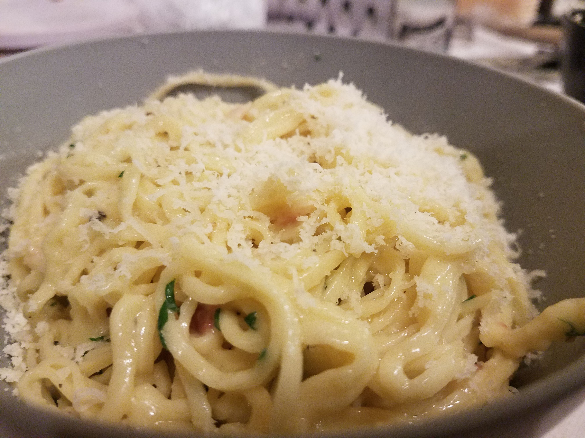

Aglio E Olio
A simple Italian dish that will soothe your soul! Make this with fresh or dried pasta!

Ingredients
- 8oz dried pasta
- 2 TBS olive oil
- Red Pepper flakes
- 4 garlic cloves
- 1/2 cup parmesan
- Salt & pepper to taste
Steps
- Chop garlic
- Heat garlic on stove in oil on medium-low
- Bring salted water to a boil
- Add dried pasta & boil for 8 minutes
- Remove pasta from water; be sure to save a 1/4 cup of pasta water for the sauce!
- Take garlic & olive oil mixture off heat
- Add pasta to mixture and stir
- Add pasta water back in until you hear a faint "squishing" noise as you stir
- Add red pepper flake, pepper, and salt
- Serve & top with grated parmesan